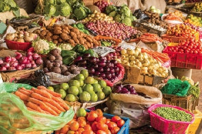
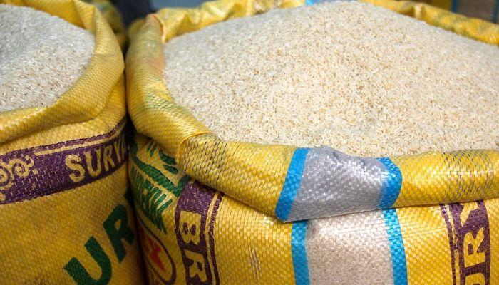
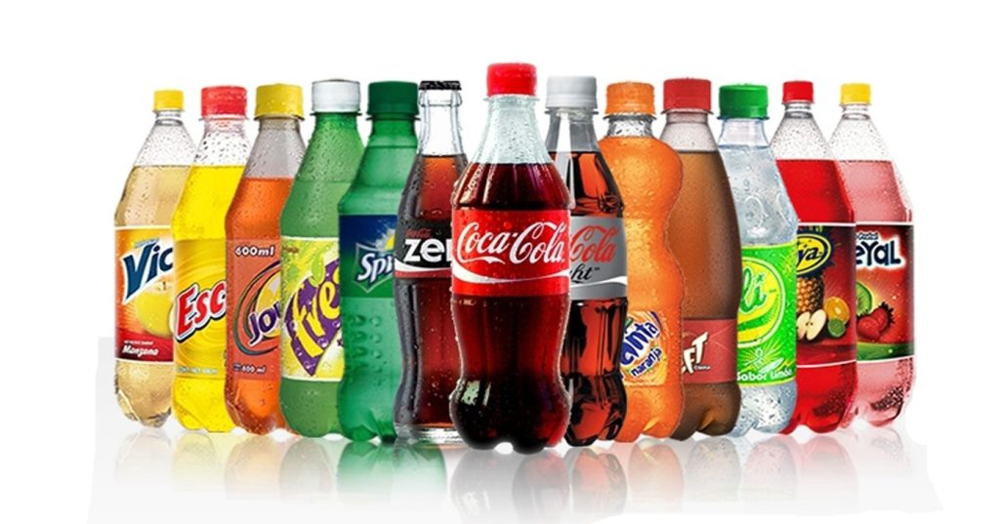

Your neighborhood market in Oyibi
Good food. Everyday essentials. Right around the corner.
Find local foodstuff and everyday provisions at M.A. Victory Market in Old Ayensu Estates. Friendly service, familiar favourites, and a little bit of everything you need.
Local foodstuff and provisions, all in one convenient stop.

Shop localFresh finds and everyday staples
Conveniently locatedOld Ayensu Estates, Oyibi
Local & everyday goodsFoodstuff and provisions
Quick product enquiriesCall or message on WhatsApp
 Shop with a smile
Shop with a smileWelcome to the neighbourhood
A local shop with the things you need.
M.A. Victory Market is a friendly neighborhood shop serving the Oyibi community with local foodstuff, pantry staples, drinks, household essentials, and more.
Whether you are planning a meal or picking up a few everyday items, stop by and see what is available.
Get to know usA little bit of everything
What are you shopping for?
Cook something goodLocal foodstuff
Browse all products
Stock your pantryRice & staples
For every dayProvisions & more